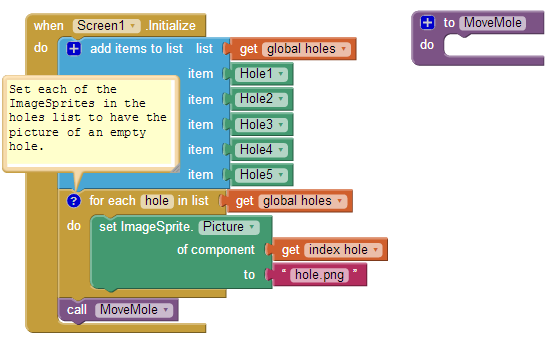
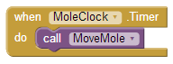
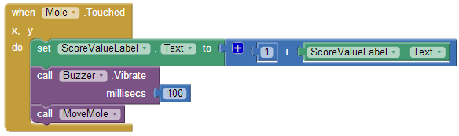
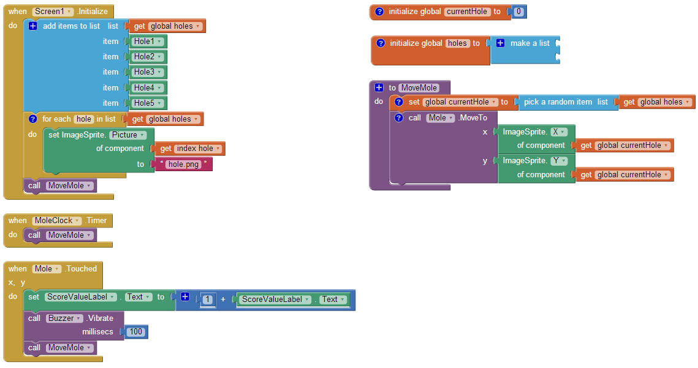

What You're Building

Download Refined Version (Book Chapter PDF)
This tutorial shows you how to build a game similar to the Whac-A-MoleTM arcade game. Specifically, your goal is to whack (tap) a mole that randomly pops out of one of five fixed holes. Every time you succeed, your score is increased by one point.
In order to highlight new App Inventor features — the Advanced tab and Sprite Z-layering — this app takes a different approach than the original Mole Mash tutorial, which you need not have read in order to do this one. You should, however, be familiar with the basics of App Inventor — using the Component Designer to build a user interface and using the Blocks Editor to specify event handlers. If you are not familiar with the basics, try stepping through some of the basic tutorials before continuing.
Introduction
This tutorial includes:
- Creating a list of components
- Using functionality from the Advanced section of the Blocks Editor to get and set properties of arbitrary components
- Having game events controlled by the Clock component
- Using Sprite Z-layering to ensure that one sprite (ImageSprite or Ball) appears in front of another
Getting Started
Connect to the App Inventor web site and start a new project. Set the screen's Title property to an appropriate name, such as "Mole Mash". Open the Blocks Editor and connect it to the phone. Download these image files (created by Yun Miao) by right-clicking on them, then add them to the project by pressing the "Add..." button in the Media pane.


Set up the Components
The user interface will contain a total of 6 ImageSprites: 5 unmoving holes and 1 mole, which will move on top of the holes. Use the component designer to create the user interface. When you are done, it should look something like the picture below. Don't worry about lining up the holes evenly. You will specify their locations through their X and Y properties. Additional instructions are below the picture.

Create the following components by dragging them from the Palette into the Viewer.
| Component Type | Palette Group | What you'll name it | Purpose of Component |
| Canvas | Basic | GameCanvas | The game field |
| ImageSprite (5) | Animation | Hole1 ... Hole5 | Holes from which the mole can appear |
| ImageSprite | Animation | Mole | The mole |
| HorizontalArrangement | Screen Arrangement | ScoreArrangement | To display the score |
| Label | Basic | ScoreTextLabel | To hold "Score: " |
| Label | Basic | ScoreValueLabel | To hold the score (# of times the mole was hit) |
| Clock | Basic | MoleClock | To control the mole's movement |
| Sound | Media | Buzzer | To vibrate when the mole is touched |
Make the following changes to the components' properties:
| Component | Action |
| Canvas1 | Set BackgroundColor to Green. Set Width to 320 pixels. Set Height to 320 pixels. |
| Hole1 | Set X to 20 and Y to 60 (upper left). |
| Hole2 | Set X to 130 and Y to 60 (upper center). |
| Hole3 | Set X to 240 and Y to 60 (upper right) |
| Hole4 | Set X to 75 and Y to 140 (lower left). |
| Hole5 | Set X to 185 and Y to 140 (lower right). |
| Mole | Set Picture to "mole.png". Set Z to 2 so the mole appears in front of the other ImageSprite s, which have the default Z value of 1. |
| ScoreTextLabel | Set Text to "Score: ". |
| ScoreTextValue | Set Text to "0". |
Don't worry now about setting the Picture property for the holes; we'll set the property in the Blocks Editor.
Add Behaviors to the Components
Here is an overview of what we need to create blocks to do:
- Create variables:
- holes: a list of holes
- currentHole: the hole the mole is currently coming out of
- When the app starts:
- Populate the list of holes.
- Set each hole's Picture property to "hole.png".
- Call procedure MoveMole (below).
- Create a procedure MoveMole to:
- Set currentHole to a random hole from the list holes.
- Move the mole to the location of currentHole.
- Make MoleClock call MoveMole whenever its timer goes off (every second).
- Implement a handler that does the following when the mole is touched:
- Add one to the score.
- Make the phone briefly vibrate.
- Call MoveMole.
To proceed, switch to the Blocks Editor.
Creating Variables
Create the variables holes and currentHole. For now, we will give them "dummy" initial values; we'll set their real initial values in the Screen1.Initialize event handler, which is run when the app starts. (For technical reasons, components cannot be referred to in def blocks, which are run before the app has started.) Here is a picture and list of the blocks you will need:

| Block type | Drawer | Purpose |
| def variable as (holes) | Definition | Hold a list of holes. |
| make a list | Lists | Create an empty list, to be filled in when the program starts. |
| def variable as (currentHole) | Definition | Hold the mole's current hole. |
| number (0) | Numbers | Provide a required initial value for currentHole. |
As always, comments (created by right-clicking on a block) are encouraged but not required.
Starting the App
The first event to occur in any program in Screen1.Initialize, so we will put start-up code in that handler. Specifically, we will add the hole components to the list holes, set each hole's Picture property to "hole.png", and call MoveMole. Since we have not yet written MoveMole, we will create an empty procedure with that name, which we will fill in later.
Below are a picture and table of the blocks you need to create. Note that the "Any ImageSprite" drawer is found under the "Advanced" tab to the right of "Built-In" and "My Blocks" in the Blocks Editor.

| Block type | Drawer | Purpose |
| Screen1.Initialize | Screen1 | Specify what should happen when the app starts. |
| add items to list | Lists | Add the following values to... |
| holes | My Definitions | ...the list of holes: |
| component Hole1 | Hole1 | -the upper left hole |
| component Hole2 | Hole2 | -the upper center hole |
| component Hole3 | Hole3 | -the upper right hole |
| component Hole4 | Hole4 | -the lower left hole |
| component Hole5 | Hole5 | -the lower right hole |
| foreach | Control | Specify that we would like... |
| name (hole) | Definitions | ...a variable named "hole"... |
| holes | My Definitions | ...to take on each of the values in the list holes . |
| ImageSprite.Picture | Any Image Sprite | Set the Picture property of... |
| value hole | My Definitions | ...the ImageSprite referred to by the variable hole ... |
| text (hole.png) | Text | ...to the picture of the empty hole. |
| to procedure (MoveMole) | Definition | Create an procedure, to be filled in later, for moving the mole. |
| MoveMole | My Definitions | Call MoveMole to make the first placement of the mole. |
Compare the foreach block to the equivalent blocks that would be necessary without it:

Not only is the left set of blocks shorter, it is less repetitious, sparing the programmer from semi-mindless copy-and-pasting and making it easier to modify, for example, if the name of the picture is changed.
Moving the Mole
Now let's fill in the body of the procedure MoveMole, which we'll call when the program starts, when the mole gets touched, and when our timer goes off every second. What we want it to do is to pick a random hole and move the mole on top of it. Here are a picture and list of the new blocks:

| Block type | Drawer | Purpose |
| set currentHole to | My Definitions | Save the... |
| call pick random item | Lists | ...randomly selected... |
| holes | My Definitions | ...hole. |
| call Mole.MoveTo | Mole | Move the mole to the... |
| ImageSprite.X | Advanced/ImageSprite | ..x-coordinate of... |
| currentHole | My Definitions | ...the chosen hole... |
| ImageSprite.Y | Advanced/ImageSprite | ...and the y-coordinate of... |
| current Hole | My Definitions | ...the chosen hole. |
We now need to specify that MoveMole should be called whenever MoleClock's Timer goes off. We just need two blocks to accomplish that:

| Block type | Drawer | Purpose |
| MoleClock.Timer | MoleClock | When the timer goes off... |
| call MoveMole | My Definitions | ...move the mole. |
Registering Touches
Finally, we need to specify what happens when the mole is touched. Specifically, we want to:
- Increment the score.
- Make the phone vibrate briefly.
- Move the mole.
We can easily translate these to blocks:

| Block type | Drawer | Purpose |
| Mole.Touched | Mole | When the mole is touched... |
| set ScoreValueLabel.Text to | ScoreValueLabel | ...update the visible score to... |
| block | Math | ...the result of adding... |
| number (1) | Math | ...1 [and]... |
| ScoreValueLabel.Text | ScoreValueLabel | ...the previous score. |
| call Buzzer.Vibrate | Buzzer | Make the phone vibrate for... |
| number (100) | Math | ...100 milliseconds. |
| call MoveMole | My Definitions | Move the mole to a new location. |
Final Program

Variations
Here are some variations you might want to implement:
- Adding a Reset button to set the score back to 0.
- Having the score depend not just on the number of hits but also the number of misses and escaped moles.
- Increasing the speed of the game of mole movement if the player is doing well and decreasing it if the player is doing poorly.
- Adding a second mole on a different timer.
You can see how to implement the first two variations in the original Mole Mash tutorial.
Review
Here are some of the ideas covered in this tutorial:
- Putting components in a List.
- Performing an operation on every component in a List using the foreach block and Advanced features.
- Placing an ImageSprite on top of another, using their Z properties to control which goes in front.
- Using the Clock component to control game play.
- Creating a procedure and calling it from multiple places.
Done with MoleMash 2? Return to the other tutorials here.
Scan the Sample App to your Phone
Scan the following barcode onto your phone to install and run the sample app.

Download Source Code
If you'd like to work with this sample in App Inventor, download the source code to your computer, then open App Inventor, go to the My Projects page, and choose More Actions | Upload Source.